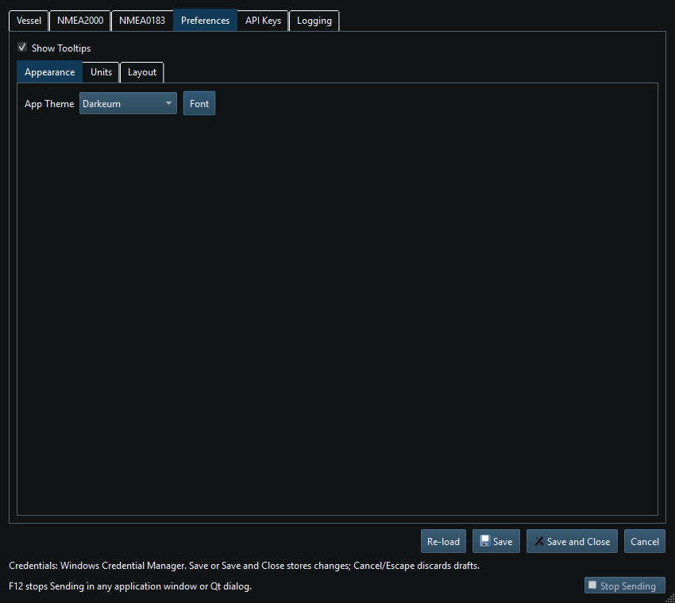
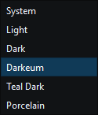

Choose a built-in or custom theme to adjust appearance. Your saved theme remains selected when you restart. This manual uses Darkeum illustrations.
System follows the native platform style/palette. The other built-ins provide curated palettes. Darkeum and Teal Dark are separate choices; the manual does not substitute one for the other. The six built-in choices remain available even if custom files are missing.
Use the stylesheets subdirectory of the application-data root. For example, install MyBench.qss there, or MyBench/MyBench.qss with its associated assets. A theme folder with one unambiguously named QSS is also supported. Choose a distinct name so you do not override an existing theme unintentionally.
Your stylesheets are not overwritten. Existing custom files remain available when valid. A missing, unreadable or malformed selection falls back to a built-in theme; inspect the log/status and check the file before changing unrelated settings.
Resize docks and use Help's image enlargement for detailed figures. Native font metrics and DPI can change spacing. A custom QSS may force unreadable colors or fixed sizes; try a built-in to distinguish theme defects from data/rendering defects. Treat externally supplied QSS as trusted local content because it can reference local assets.

Figure 26. Choose a theme in Setup, then Save to keep the selection. Click to enlarge.

Figure 27. Choose a built-in theme or an available custom QSS theme. Click to enlarge.
Main Window · Instruments and Generators · Layout Management · Templates · Property Editor · Object Tree · Keyboard Shortcuts · Connection Troubleshooting · Enable, Dispatch and Sending · Route Overview · Engineering Units